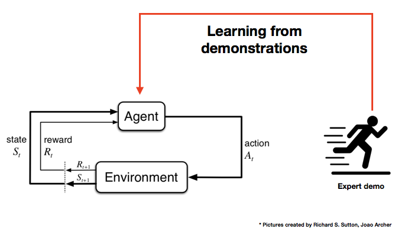
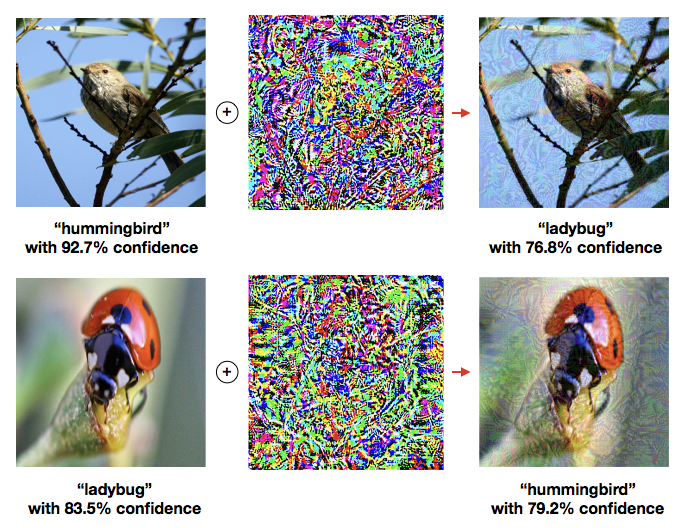
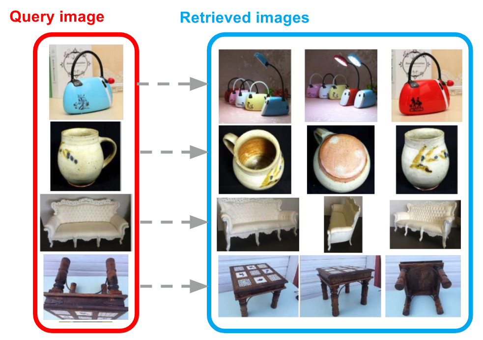
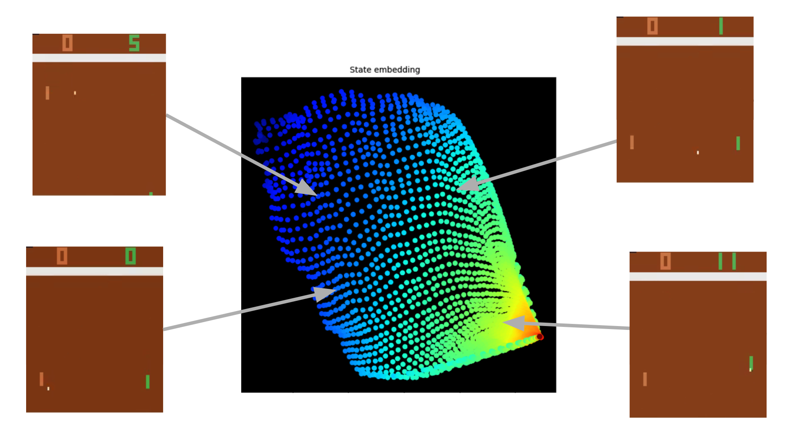

Reinforcement learning from expert demonstrations
Infants learn how to walk and talk by imitating behaviors of other people. We are developing a new algorithm that makes the agent learn directly from expert demonstrations.

Defense against adversarial attacks on neural networks
Neural networks with human-level classification accuracy have near 100 percent error rate on adversarial examples which are generated by adding small noise to original images. This project aims to develop algorithms to restore the original images from adversarial images. The aim is to improve the defense against malicious attacks and to make deep learning architectures handle more general input images by improving their robustness.

End-to-end learning to hash for efficient retrieval via combinatorial optimization
We design and implement end-to-end optimization algorithms for learning to build hash tables for efficient and accurate hash tables for data retrieval via combinatorial optimization.

Abstractions for reinforcement learning
In many challenging reinforcement learning tasks, especially in environments with sparse rewards, agent policies can be highly improved by employing auxiliary signals. By mapping states and actions into a joint embedding space, we can leverage the dynamics of the new space.